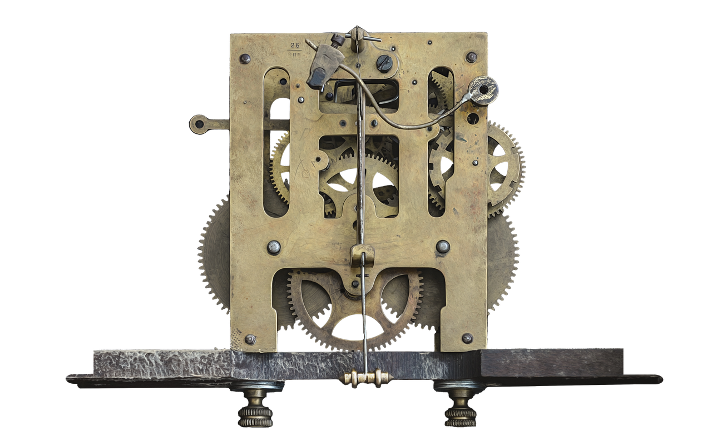
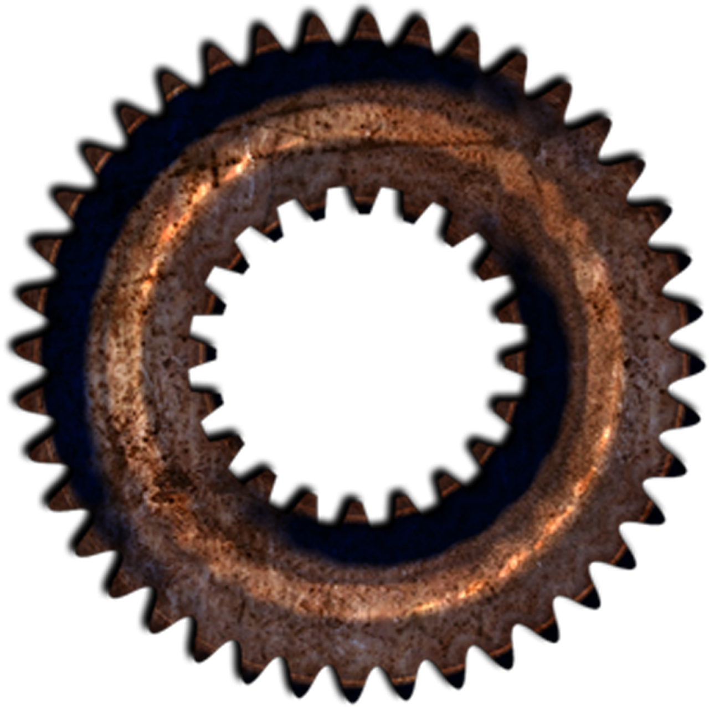
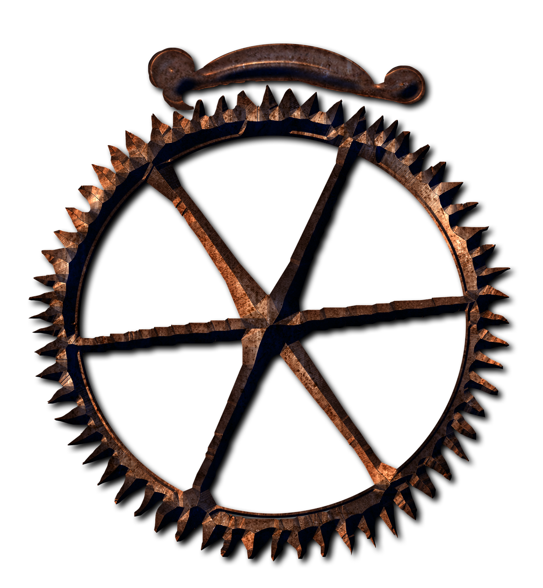

00
AUTHORIZATION LEVELCURIOUS
HORIZONTAL LATCH ACCEPTED
EA–000NULL
ARCHIVE
索引に存在しない、第零書庫。
記録されなかった可能性は、ここで暗号化されている。
ENTRY VECTORDIRECT / UNVERIFIED



PHASE 01 / ROTOR ALIGNMENT
三連暗号輪列
WAITING FOR SETTINGS00
00
ENCRYPTED REGISTER
XLIWI · MW · XLI · OIC
ATTEMPTS 00
- Ⅰ
機関銘板に刻まれた、始まりの番号。
- Ⅱ
映像として残った断片の、確認可能な最小本数。
- Ⅲ
表層の総合実績金庫に格納された公開実績数。接続端子は数えない。
PHASE 02 / CIPHER KEY
THE CREST IS THE KEY
PHASE 03 / OUTBOUND TRANSMISSION
NODE X
暗号経路は開通した。外部通信先は、まだ接続されていない。
EXTERNAL SIGNALへ接続 ↗ CHANNEL NOT ASSIGNED